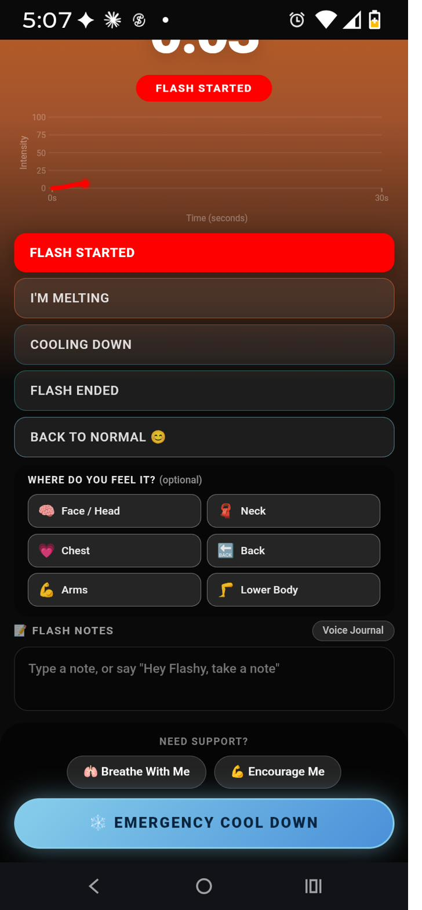
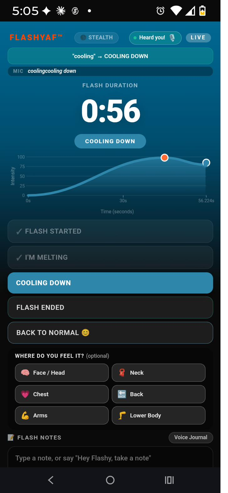
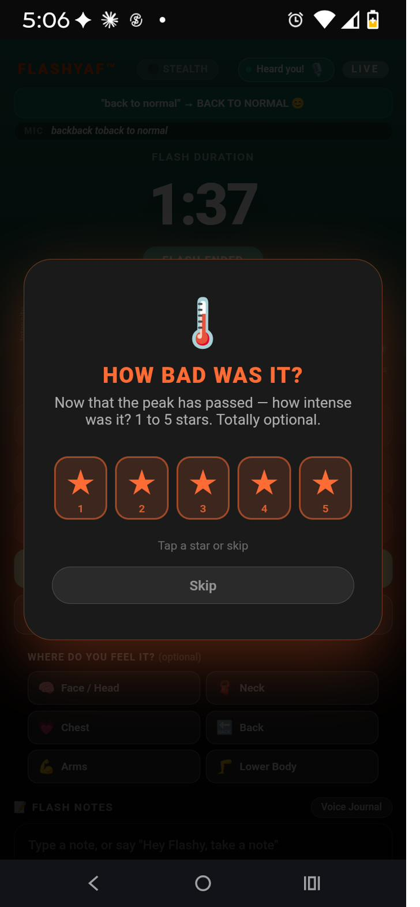
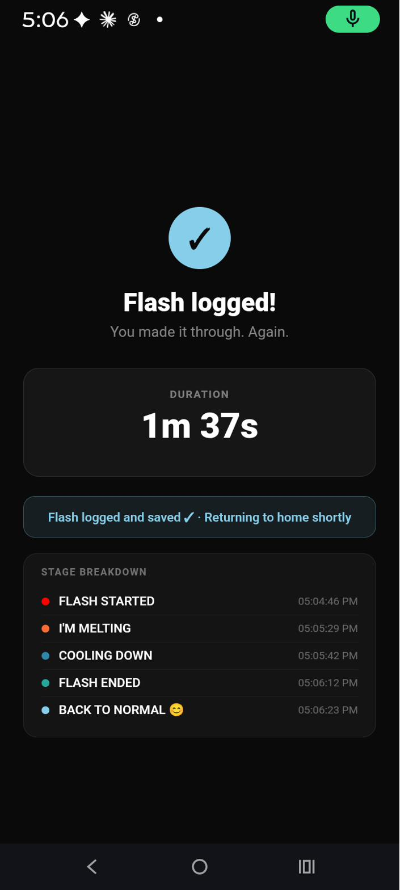

Watch it work
Below is real, unedited screen capture from the live FLASHYAF™ app — a full flash session, and a guided breathing session. Both are demo footage, edited only to trim time and skip a brief audio glitch — everything you see and hear is the real app.
It starts with one tap — or one word
The moment a flash begins, FLASHYAF™ starts tracking immediately. You can tap to start, or just say the word — either way, support is already underway, including quick access to Breathe With Me, Encourage Me, and Emergency Cool Down.

A real screen from the FLASHYAF™ app — "FLASH STARTED," with support tools already on screen.
Peak of the flash — live tracking
The moment a flash hits its peak, FLASHYAF™ is already tracking intensity in real time. The app recognized the voice command "I'm melting" and logged the stage instantly — no typing required.

A real screen from the FLASHYAF™ app — peak intensity, "I'M MELTING" stage, voice command recognized live.
Cooling down — just by saying so
As the flash eases, you don't have to tap anything. Say "cooling," and FLASHYAF™ hears it, confirms it, and moves the stage forward automatically — while the live chart and theme shift from fire to ice.

A real screen from the FLASHYAF™ app — voice command recognized: "cooling" → COOLING DOWN.
A quick, optional check-in
Once the peak has passed, FLASHYAF™ gently asks how intense it was — a simple 1 to 5 star rating, totally optional, that helps build your own personal history over time.

A real screen from the FLASHYAF™ app — optional intensity check-in, 1 to 5 stars.
Flash logged
Once the flash ends, FLASHYAF™ saves the full stage-by-stage timeline automatically — duration, peak, and recovery — so you have a clear record without having to reconstruct it after the fact.

A real screen from the FLASHYAF™ app — flash logged, with full stage breakdown.
What this is — and isn't
FLASHYAF™ is a General Wellness product. It's designed to help you track and understand your own experience in real time — it does not diagnose, treat, or replace medical care. For any health concerns, please talk to a healthcare provider.